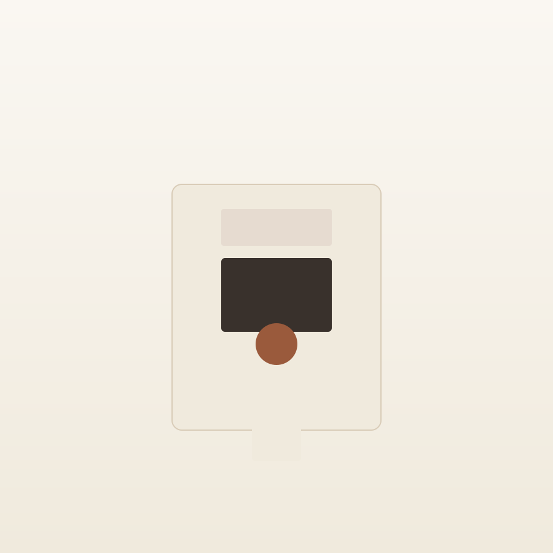
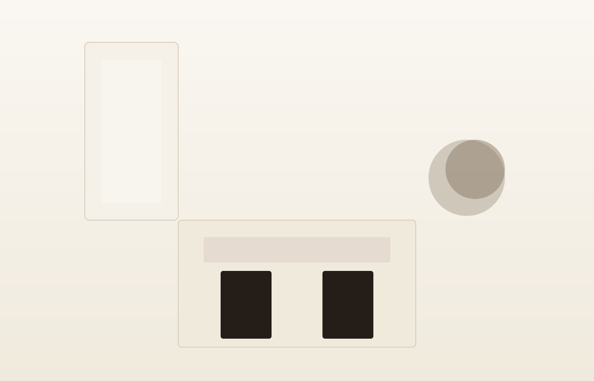

Depilação a laser
Para todos os fototipos, sem manchas pós-procedimento.
Depilação a laser, criolipólise, limpeza de pele, drenagem, massagens e nutrição — com protocolos pensados para a sua pele, em um espaço acolhedor.
A maioria dos protocolos de estética foi pensada para outro tipo de pele.
Pele negra reage diferente ao laser, à limpeza e ao sol. Cuidar dela exige protocolo próprio, não adaptação.
Na Zarah Flor, a pele negra não é exceção — é a especialidade.
Não é «pele sensível» genérica. É fototipo, é tendência a manchas, é como o laser se comporta na sua pele. Aqui o protocolo nasceu para isso.

Cada tratamento abaixo tem protocolo validado para pele negra.
Não sabe por onde começar? Comece pela avaliação.
Avaliação personalizada
Para todos os fototipos, sem manchas pós-procedimento.
Extração e cuidado que respeitam a barreira da pele negra.
Redução de medidas e bem-estar com técnicas manuais.
Alívio de tensão e recuperação muscular.
Mais de 87 mil pessoas acompanham o trabalho da Zarah Flor no Instagram. A clínica tem avaliação 5,0 no Google.
0K seguidores no Instagram
0 de avaliação no Google
Edifício Central Offices · R. Maestro Cardim, 560 - Sala 205 · Bela Vista, São Paulo - SP
WhatsApp (11) 97065-3411 · abre sábado às 09:00
Agendar pelo WhatsApp · (11) 97065-3411